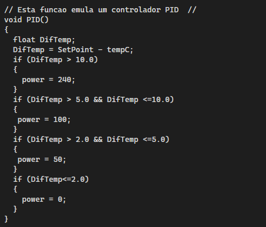

Estrutura do Projeto
O circuito foi montado em uma placa de circuito impresso (PCI) feita com placa de fenolite revestida com cobre, que permite a condução elétrica entre os componentes. Para a confecção do layout do circuito, utilizamos um adesivo automotivo recortado com o desenho das trilhas. Esse adesivo funciona como uma máscara protetora, impedindo que as áreas cobertas sejam corroídas no processo químico.
Após a fixação do adesivo na placa, foi realizado o processo de corrosão para remover o cobre excedente, deixando apenas as trilhas do circuito. Em seguida, foram feitos os furos com uma broca de 0.1 mm de diâmetro, permitindo a soldagem dos terminais dos componentes eletrônicos. Esse método garante maior precisão na montagem do circuito e proporciona um acabamento mais profissional.
A estrutura final da placa permite a montagem segura e organizada do sistema de controle de temperatura, facilitando tanto a fixação dos componentes quanto a futura manutenção.
1. Resumo do Circuito do Projeto
Para a construção de um sistema de controle de temperatura, necessitamos de alguns circuitos, sendo eles:
- Controle de corrente alternada;
- Sistema detector de zeros;
- Sistema de controle de tensão e um mecanismo de controle;
Sendo estes o controle proporcional integral derivativo (PID). Para se aprofundar nos cálculos do PID, é necessário olhar o apêndice.
2. Controle de Corrente Alternada
Temos duas alternativas para controlar uma corrente alternada. A primeira seria relé, e a segunda seria algo parecido com um botão on/off na resistência, comando pelo Arduino.
Esse tipo de controle funciona como relé de temperatura, usando o mesmo princípio de uma geladeira. Como é um projeto em pequena escala, será melhor.
Primeiro ponto de importância:
- Uma resistência de 220V poderia queimar o projeto, e vamos utilizar uma corrente alternada.
3. Sistemas detector de zero
Ele informa onde senoide começa, sendo um circuito que permite um controle comandado pelo Arduino, determinado pela parte da onda da senoide que é enviada para o circuito que é enviada para o circuito.
Optoacoplador: É composto por um fotodiodo e um fototransistor. o funcionamento é simples: quando chega tensão nele, é gerado um determinado valor positivo, que varia com o modelo do opto. O diodo passa a conduzir
entre o coletor e o emissor. Desse modo, temos um circuito no qual qualquer tensão no lado esquerdo é detectada e convertida em emissão de luz do lado direito, significando que não há ocrrenter elétrica entre ambos.
Ou seja , se houver uma sobretensão do lado esquerdo, essa tensão não é passada para o lado direito, preservando a parte mais sensivel do circuito
4. Sistema de controle de tensão
Circuito de controle de tensão para cargas de 110 V e 220 V: Para fazer isso, usamos um
circuito baseado em TRIAC. O software que compõe o Arduino conta com um mecanismo de
interrupção que monitora a passagem por zero no ciclo. Dentro da rotina, é executado, em
cada zero, o sistema liga o TRIAC em instantes distintos, de acordo com a tensão que se deseja
enviar à carga, e o TRIAC desliga na próxima passagem por zero.
5. Integração entre hardware e software
O sistema demonstra uma interacao direta entre o hardware e o software. O sensor LM35,
como componente fisico, realiza a captacao da temperatura. Essa informacao e entao processada
pelo Arduino por meio do codigo embarcado, que interpreta os dados e toma decisoes baseadas
em parametros estabelecidos. A atuacao sobre o modulo rele representa a resposta fisica do
sistema, fechando o ciclo de controle automatico.
6. Controle Proporcional Integra Derivativo
O controle PID é um mecanismo genérico de controle do tipo "loop feedback", ou seja, o sistema leva em conta a reposta do processo durante o ajuste para modificar seu comportamento.
PID calcula um erro, que é ea diferença entre o valor atual da variável a ser controlada no
tempo e o setpoint . Ele tenta minimizar o erro ajustando a entrada do processo de controle.
O algoritmo envolve três parâmetros, sendo assim o PID pode ser chamado de controle de
três termos: os termos proporcional, integral e derivativo.
Heuristicamente, esses valores podem ser interpretados em termos de tempo: P depende
do erro presente, I da acumulação de erros passados, e D é uma tentativa de prever os erros
futuros, baseado na taxa atual de mudança.
Quando não se conhecem as especificidades de um processo, o PID é considerado o melhor
algoritmo de controle. Ajustando esses três parâmetros do PID, conseguimos fazê-lo atender
1
às demandas específicas de cada processo a ser controlado. É importante observar que o PID,
por si só, não garante o controle ótimo do sistema nem sua estabilidade. Cada caso é um caso.
A teoria por trás do PID baseia-se no controle desses três termos para ajustar a potência
necessária para que a temperatura atinja o setpoint . Quando a temperatura está abaixo do
setpoint , ele injeta uma potência proporcional para atingir o setpoint . Quando a temperatura
fica acima do setpoint , ele diminui a potência para assim ficar abaixo do setpoint , conseguindo,
desse modo, realizar o controle.
7. Lógica de Controle
O projeto implementa um sistema de controle de temperatura com Arduino, utilizando o sensor LM35 para medir a temperatura em tempo real. O usuário pode ajustar manualmente o setpoint (temperatura desejada) por meio de dois botões. As informações são exibidas em um display LCD 16x2 via comunicação I2C.
A lógica de controle utiliza um PID simplificado, que ajusta a potência aplicada a uma carga resistiva (como um fogão elétrico) com base na diferença entre a temperatura medida e o setpoint. Esse controle é feito por meio de um disparo por ângulo de fase, usando um TRIAC acionado através de um optoacoplador MOC3021. A temporização do disparo é sincronizada com a passagem por zero da rede elétrica, usando interrupções no Arduino.
8. Códigos do Arduino
Esse trecho configura dois botões para aumentar ou diminuir o valor de temperatura desejada (SetPoint). Usa uma técnica chamada debounce para evitar leituras erradas por causa de ruído mecânico dos botões. Cada vez que um botão é pressionado, o SetPoint é ajustado em ±1 grau.

A função zero_crosss_int() controla o momento exato em que o TRIAC (um tipo de chave eletrônica) deve ligar a carga. O tempo de espera é calculado com base na potência desejada (power), permitindo controlar a energia enviada a uma carga AC.

Essa é a função que roda continuamente no Arduino:
Lê a temperatura do sensor.
Ajusta o valor de SetPoint com os botões.
Calcula a potência necessária para atingir o SetPoint usando uma função PID.
Mostra a temperatura atual, o SetPoint e o nível de potência em um display LCD.

Essa função simula um controlador PID simples:
Compara a temperatura desejada (SetPoint) com a atual.
Define o valor de power (potência) com base na diferença de temperatura.
Quanto maior a diferença, maior a potência.

Esse código é executado apenas uma vez ao iniciar o Arduino:
Define pinos de entrada e saída.
Inicia comunicação serial e LCD.
Configura os botões.
Lê a temperatura do sensor LM35 (faz média de 5 leituras para maior precisão).

6. Conclusão
Baseando-se nos pontos mostrados anteriormente, é necessário, para a fabricação do circuito
de controle de temperatura, sabermos a teoria por trás dos circuitos apresentados, além da
teoria por trás do sistema de cálculo chamado PID.
Referências
7. Apêndice